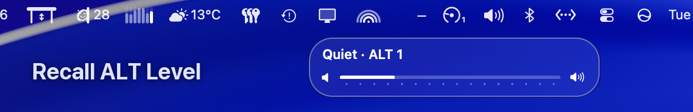
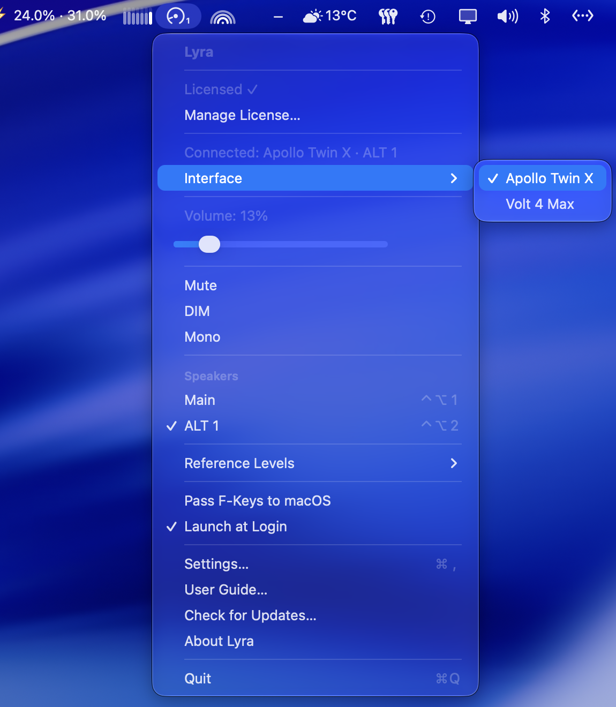

The case for working at a fixed monitor level is made in the calibrated monitoring post: the ear's tonal balance shifts with level, so decisions made against a level that keeps moving drift with it. Calibrate the room to a number, come back to that number, and today's mix can be compared with yesterday's.
That argument usually assumes one pair of speakers. Many mixing setups have two or three: the main monitors, a small pair for a small-system check, sometimes a third. Switching between them is where the level tends to slip.
The same monitor position, a different level
Two pairs of speakers fed the same signal can play at quite different levels. The SPL at the listening position depends on each pair's sensitivity, its amplifier gain or input trim, and its distance from the listening position, and none of these has to match between pairs. Unless the pairs have been matched by measurement, the same monitor position can play the small pair several dB louder or quieter than the mains. Switch at that position and the comparison is between two levels as much as between two speakers.
Level tends to win that comparison. Of two otherwise similar playbacks, the louder one sounds fuller and brighter, and a dB or two is enough to tip it. A check on the small pair tells you something about the mix only when the small pair plays at the level the mains were calibrated to, or at a deliberate, known offset from it.
So each pair needs its own calibration, and switching speakers needs to change the level along with them.
Calibrating each pair with Audita
Audita's monitor-level calibration plays pink noise through the selected output while the monitor level is set until the reading at the listening position lands on the target. It lives in Settings › Calibration, on the Monitor level card: Calibrate…, set the level, Capture position. Send to Lyra… then writes the measured dB SPL into one of Lyra's three Reference Level slots, under a name such as Mix.
In Lyra 1.9 each speaker pair keeps its own three slots, and a level sent from Audita lands on the pair that was playing while Audita measured. Calibrating two pairs is the same pass done twice:
- With the mains playing, run the calibration and send it to slot 2 as Mix.
- Switch to ALT 1 with Ctrl+Opt+2, run the calibration again, and send it to slot 2.
The second send goes to ALT 1's slot 2, not the mains'. If you bracket the reference with a quiet and a loud check, do the same for slots 1 and 3. Each slot ends up holding a monitor position and the SPL it was measured at, for its own speakers.
Switching at level
| Slot | Main | ALT 1 | ALT 2 |
|---|---|---|---|
| 1 | Ctrl+F10 | Ctrl+Opt+F10 | Ctrl+Opt+Shift+F10 |
| 2 | Ctrl+F11 | Ctrl+Opt+F11 | Ctrl+Opt+Shift+F11 |
| 3 | Ctrl+F12 | Ctrl+Opt+F12 | Ctrl+Opt+Shift+F12 |
Ctrl+F10 to F12 recall the Main slots. Adding Opt recalls the ALT 1 slots and Opt+Shift the ALT 2 slots, so Ctrl+Opt+F11 is Mix on the small pair. One key changes the speakers and sets the level.
The order of those two changes matters. If Lyra switched first and set the level second, the new pair would play for a moment at the old pair's position, which can be well above its own calibration. So when the target level is lower, Lyra lowers the level first and then switches; when it is higher, Lyra switches first and then raises it. No pair plays above its own starting or target level, including the moment between the two steps.

Plain switching is there as well: Ctrl+Opt+1, 2 and 3 pick a pair, and Ctrl+Opt+§ (Ctrl+Opt+` on US keyboards) steps to the next one. The volume HUD shows the active pair beside the interface name, and the menu bar icon carries a small 1 or 2 while an ALT pair is playing.
Now on Volt as well
Until this release, all of this needed a Universal Audio Apollo interface. Lyra 1.9 adds second-generation Universal Audio Volt interfaces: Volt Gen 2 and the Volt Max models get volume, mute, DIM, mono and Reference Levels, and the Volt 4 Max gets ALT speakers too. Audita 1.6.1, out the same day, sends calibrations to Lyra and runs its self-check recall on a Volt, so a desk with a Volt 4 Max and two pairs of speakers can run the whole workflow above.

I tested it on a Volt 4 Max. The Volt 876 may work, but I haven't tested it, and other first-generation Volts are not supported. UAD Console needs to be installed; its window doesn't need to be open.
Both updates are free for existing licenses, through Check for Updates in each app. Lyra and Audita each have a 7-day trial. Everything else in the two releases is in the release notes: Lyra 1.9 and Audita 1.6.1.
The single-pair version of this setup is in Calibrate once, recall forever.
Lyra is an independent product by Headroom Studio. It is not affiliated with, endorsed by or supported by Universal Audio, Inc. Universal Audio, Apollo, Volt, UAD and LUNA are trademarks of Universal Audio, Inc., used here only to identify compatible hardware and software.